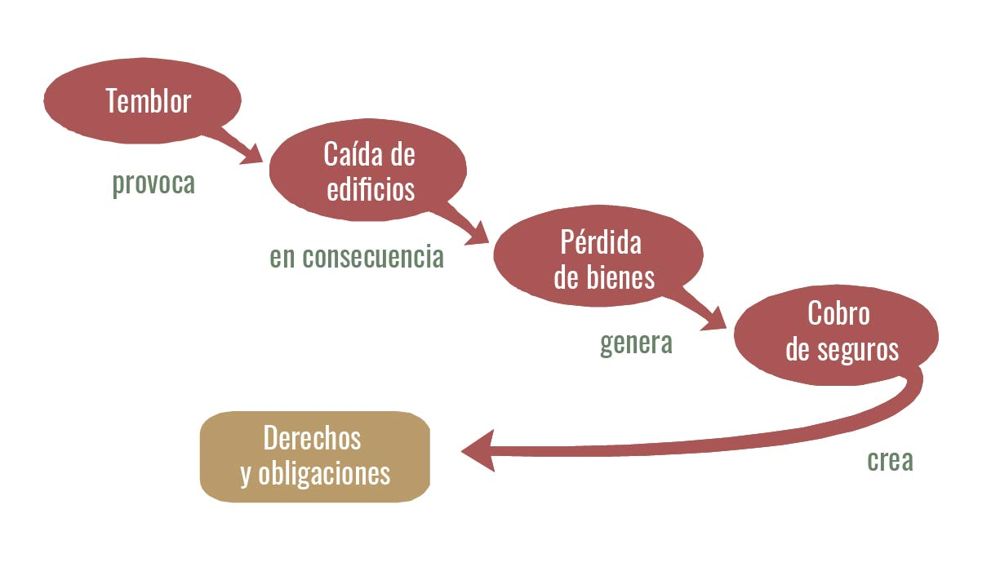

Hechos jurídicos
¿Qué es un hecho jurídico?
Comenzaremos definiendo a lo jurídico como todo aquello que está relacionado con el ámbito del Derecho, es decir, las normas, reglas y principios que rigen la convivencia de las personas en una sociedad. En este contexto, un hecho jurídico es un evento o suceso que está relacionado con lo jurídico y que puede tener consecuencias legales.
Para adentrarnos en este tema es importante señalar, respecto a los distintos hechos cotidianos, cuáles son de importancia para el Derecho y cuáles de ellos no, a continuación, te mostramos algunas características que pueden ayudarte a distinguir un hecho jurídico de un hecho cotidiano.
Características de un hecho jurídico:
- Relevancia legal: Un hecho jurídico debe tener un impacto en el campo del derecho, lo que significa que está sujeto a reglas y normativas legales.
- Independencia de la voluntad humana: Los hechos jurídicos pueden ser tanto voluntarios (realizados por decisión propia) como involuntarios (ocurren sin control humano).
- Generación de consecuencias legales: Los hechos jurídicos crean efectos legales, como derechos, obligaciones, responsabilidades o cambios en las relaciones jurídicas.
De lo anterior podemos inferir que algunos hechos aparentemente ajenos al Derecho, de pronto pueden tener relevancia por las consecuencias que traen. Supongamos que eres propietario de un automóvil y lo estacionas en una calle. Un día, mientras el vehículo está estacionado, un conductor distraído choca contra tu automóvil y causa daños significativos. En este caso, el choque de automóviles es un ejemplo de un hecho jurídico.
- Relevancia legal: El choque de automóviles está sujeto a las leyes de tránsito y las leyes de responsabilidad civil, lo que lo hace relevante en el ámbito del Derecho.
- Independencia de la voluntad humana: El conductor que chocó contra tu automóvil no lo hizo a propósito; fue un accidente, lo que demuestra que no siempre se requiere una intención deliberada para que ocurra un hecho jurídico.
- Consecuencias legales: A raíz del choque, surgen cuestiones legales, como la responsabilidad del conductor por los daños a tu automóvil y la posible compensación que debes recibir para cubrir las reparaciones. Estas consecuencias legales son características de un hecho jurídico.
Accidente de auto. Imagen de fxquadro, Freepik.
Es importante mencionar que ningún hecho es en sí mismo jurídico o no jurídico; la sociedad les asigna ese significado según se vean afectadas las relaciones de convivencia social; en decir, un hecho jurídico es un acontecimiento que tiene importancia en el ámbito del Derecho, independientemente de si fue voluntario o involuntario, y que genera efectos legales. Ahora bien, estos hechos pueden ser de dos tipos: aquellos producidos por los hombres, aunque no de manera intencional, o bien aquellos producidos por la naturaleza. A continuación, te explicamos a qué se refiere cada uno de ellos.
Hechos jurídicos de la naturaleza
Los hechos jurídicos de la naturaleza son acontecimientos generados por la acción de fuerzas naturales y que pueden tener implicaciones legales. Estos eventos son independientes de la voluntad humana y pueden afectar las relaciones jurídicas y los derechos de las personas. A menudo, los hechos jurídicos de la naturaleza se asocian con desastres naturales y otros eventos que causan daños o alteran la vida cotidiana de las personas. El derecho ha clasificado es este tipo de hechos en dos figuras: la fuerza mayor y el caso fortuito.
La fuerza mayor son todos aquellos fenómenos en los que el hombre se halla completamente impotente para repeler y aunque existan mecanismos de predicción son imposibles de evitar, como por ejemplo: inundaciones, huracanes, erupciones volcánicas o terremotos.
Desastre natural, inundación. Imagen de fxquadro, Freepik.
El caso fortuito, como su nombre lo indica se trata de casos donde el daño se atribuye más a la suerte o a la fortuna que al hombre, un ejemplo de ello es cuando un automovilista manejando a una velocidad moderada, no puede impedir atropellar a alguien que inesperadamente se atraviesa en su camino, se trata de casos fortuitos.
En ambos casos, el hombre es impotente ante los acontecimientos, ambos actúan causando daño o haciendo imposible el cumplimiento de una obligación, sin embargo, es importante entender como el derecho aborda estos eventos para proteger los derechos y que se puedan restringir y limitar el área de responsabilidad para las personas en situaciones de crisis.
Ejemplo:
Imagina que vives en una zona propensa a terremotos, y un día se produce un sismo de gran magnitud que causa daños significativos a tu hogar y a otros edificios en tu vecindario. Tus vecinos también sufren pérdidas. En este escenario, el terremoto es un hecho jurídico de la naturaleza. Tendrás que lidiar con cuestiones legales, como presentar reclamaciones de seguro, buscar indemnización por daños y posiblemente participar en procesos legales si surgen disputas sobre la responsabilidad.

Hechos jurídicos del hombre
Los hechos jurídicos del hombre son acciones, decisiones o eventos realizados por personas donde no existe la intención de producir consecuencias jurídicas y no obstante se presentan. Estos hechos pueden generar consecuencias legales, como derechos, obligaciones o responsabilidades aún cuando el hecho no sea deseado por su autor, como los accidentes viales o en los delitos imprudenciales.
Para su estudio estos hechos se pueden clasificar en dos categorías principales:
- Hechos Jurídicos Voluntarios:
- Lícitos: Estos son actos realizados intencionalmente por una persona que tiene la capacidad legal para llevarlos a cabo. Ejemplos de actos jurídicos son, celebrar un contrato, casarse, donar bienes, comprar una propiedad, etc. Cuando firmas un contrato de arrendamiento para alquilar una vivienda, estás creando un hecho jurídico. Esto establece tus derechos y obligaciones, así como los de la otra parte involucrada en el contrato. Si no cumples con las condiciones del contrato, puedes enfrentar consecuencias legales.
- Gestión de negocios: Son una categoría específica de actos jurídicos que involucran acuerdos o transacciones entre partes, como la compraventa, el arrendamiento, el préstamo, etc.
- Ilícitos: Son aquellos que atentan contra las leyes, independientemente que la persona que ejecuta los hechos no desee las consecuencias jurídicas, un ejemplo de ello es el delito de robo, el autor no desea que se inicie un proceso penal en su contra.
- Hechos Jurídicos Involuntarios:
- Hechos Jurídicos No Intencionales: Estos son actos que se realizan sin intención de causar un efecto legal, en estos casos encontramos a los delitos de tipo culposo, como causar un accidente de tráfico debido a un error de conducción. Pueden dar lugar a responsabilidades legales.
Identificación. Imagen de freepik, Freepik.
Recuerda que esta es una clasificación general, y algunos sistemas legales pueden tener subdivisiones o categorías adicionales. Entender los hechos jurídicos como acciones y decisiones que tienen una implicación legal, ya sean actos voluntarios o involuntarios, te permitirá entender las implicaciones que nuestros actos cotidianos pueden llegar a tener.
Hechos jurídicos
Es momento de participar en el siguiente reto.